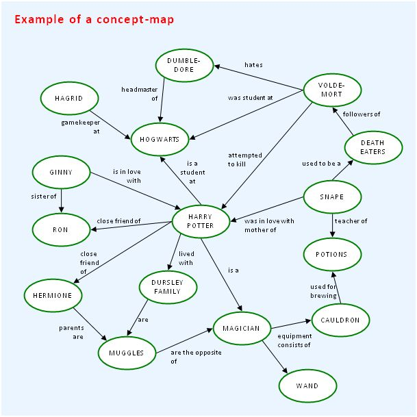

Expert Concept Map
You are working to become an expert in a particular domain. As a result of your research (both theoretic and experimental), you will acquired a lot of knowledge about the main concepts and mechanisms in your domain. In the second half of the mission, you must use this knowledge for the benefit of your design group. The decisions that have to be made during the design phase of the mission, largely depend on your expertise.
The idea of this assignment is to put the findings of your expert work in a concept-map. A concept-map is a graphical representation of important concepts (in boxes), and the relations between those concepts (represented by labelled arrows). This may sound complicated, but if you take a look at the example on the last page, it will become clear what the main idea of a concept-map is.
The purpose of making a concept-map is two-fold:
Specifically, people who read your expert concept-map should be able to understand the main concepts. It should also be clear which mechanisms are relevant for solving the mission, i.e. reducing the total amount of CO2-emission of your house.
How do you start making your concept-map?
